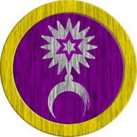
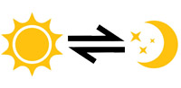

Tipos de Dano
Dano Primordial
O dano elemental é composto pelos 4 elementos principais do mundo:
- Água
- Terra
- Fogo
- Ar
Esses elementos são utilizados na conjuração de magia elemental, um tipo de magia simples, porém muito efetiva para aqueles com afinidade. As pessoas deste mundo nascem predispostas a ter afinidade com certos tipos de elementos, uma pessoa com afinidade de Fogo, até consegue conjurar magias de água, porém o custo da conjuração aumenta em 1 ponto. Outros dois elementos estão presentes, Solar e Lunar, porém são extremamente raras as pessoas que nascem com essa afinidade, e aqueles que tentam infundi-la experimentam um aumento de custo de habilidade de 2 pontos.
Dano Variante
Os elementos variantes são elementos criados a partir da combinação de elementos primordiais, causando um efeito destrutivo anormal. Esse tipo de elemento é normalmente utilizado por dragões e seus descendentes, um conjurador de elemento variante detém um poder destrutivo sem igual. As combinações mais comuns são:
| Combinação | Resultado | Água + Ar | Gelo | Água e Fogo | Vapor / Fumaça | Água + Terra | Ácido / Veneno / Óleo | Ar + Fogo | Eletricidade | Ar + Terra | Areia | Fogo + Terra | Lava / Metal |
Existem casos raros de criaturas nascidas da união de energia solar e lunar, essas criaturas costumam ser extremamente poderosas. Duas variações surgem dessa união, criaturas Radiantes, que possuem uma tendência sociável e justa, e criaturas Necróticas, que possuem uma tendência agressiva e caótica.
Interação Elemental
Cada criatura nasce com uma afinidade elemental, e às vezes a afinidade é tão grande que eles desenvolvem resistência contra ataques daquele elemento. Muitas criaturas do mundo possuem resistências aos seus elementos de afinidade, e cabe a você saber qual elemento usar contra qual criatura. As interações primordiais seguem este conceito:

Como pode ver, eles se superam formando um círculo, enquanto solar e lunar são fortes um contra o outro. Agora, uma criatura feita de Elemento Variante é capaz de resistir aos dois elementos que o formam, por exemplo, um Dragão de Areia tem resistência ao elemento do Ar e da Terra. Contra criaturas variantes é necessária uma estratégia pensada de antemão, então cuidado.
Variantes radiantes e necróticos possuem resistência a todos os elementos primordiais e variantes, porém, apesar de serem originados da união entre o elemento solar, sombrio e lunar, eles não possuem resistência contra esses elementos
Corrupção Elemental
Existem casos onde forças desconhecidas vindas do abismo tomam controle sobre elementos primordiais, os corrompendo. Elementos primordiais como água, ar, fogo e terra podem se transformar em sombras por meio da influência abissal, tornando-se um elemento raro equiparado ao lunar e solar. Esse elemento costuma corromper as mentes de seus usuários.
Efeitos Elementais
Ao lançar uma magia elemental primordial, um efeito pode ser causado, o uso desses efeitos pode mudar o curso de uma batalha para melhor ou para pior.
| Elemento | Efeito em Terreno | Efeito em Alvo | Água | Cria poças de água. | Chance de deixar o alvo molhado, tornando-o vulnerável a ataques de gelo e eletricidade. | Ar | Cria correntes de ar que dão desvantagem a ataques a distância. | Chance de derrubar o alvo. | Fogo | Incendeia áreas inflamáveis. Criaturas que passam em áreas incendiadas, sofrem 1d4 dano de fogo. | Chance de incendiar o alvo, causando 1d4 dano de fogo por 2 turnos. | Terra | Torna o terreno traiçoeiro, criando poças de óleo. Alvos gastam o dobro de movimentação para andar nesse terreno. | Chance de atordoar o alvo. | Solar | Cria uma área iluminada que remove 1 de defesa do inimigo. | Remove 1 de defesa do alvo e concede a si ou a um aliado por 2 turnos. Não cumulativo. | Lunar | Cria uma área estrelada que restaura 1d4 de saúde aliada. | Ao atacar um inimigo, concede 1d4 de saúde a si ou a um aliado a uma distância de até 5m. | Sombrio | Cria uma área de sombras que deixam inimigos surdos e cegos. | Aplica Vulnerabilidade no alvo acertado. |
Quando uma área está afetada por um efeito de terreno elemental, você pode lançar um ataque elemental na área para causar um efeito variante:
| Elemento | Variação em Terreno | Água | Ao lançar água em uma área incendiada, criam-se bolsões de vapor ou fumaça, impedindo a visibilidade. | Ar | Ao ser lançada em poças de água as eletrifica, causando 1d6 dano elétrico em criaturas que passarem por cima. | Fogo | Incendeia poças de óleo, causando 1d6 de dano de fogo em criaturas que passarem por cima. | Terra | Torna poças de água em ácido, causando 1d4 de dano de ácido em criaturas que passarem por cima. | Solar | Lunar | Sombrio | Os efeitos de área são combinados. |
Os efeitos variantes ocorrem em vice e versa, por exemplo, uma poça de água pode ser incendiada para causar efeito de fumaça, assim como pode-se lançar água em um incêndio para causar efeito de fumaça.
Efeitos Físicos
O dano físico é composto por 3 vertentes:
- Cortante
- Contundente
- Perfurante
Algumas criaturas possuem fraquezas que podem ser exploradas por um ou mais tipos de dano, outras possuem resistências a um ou todos os tipos de dano físico.
Efeitos Mágicos
O dano mágico não elemental deriva do éter, ela possui efeitos de melhoramento e deterioração. Elas são facilmente detectadas em armas encantadas e efeitos de magia como buffs e debuffs. Armas encantadas têm o efeito de ignorar resistências físicas.